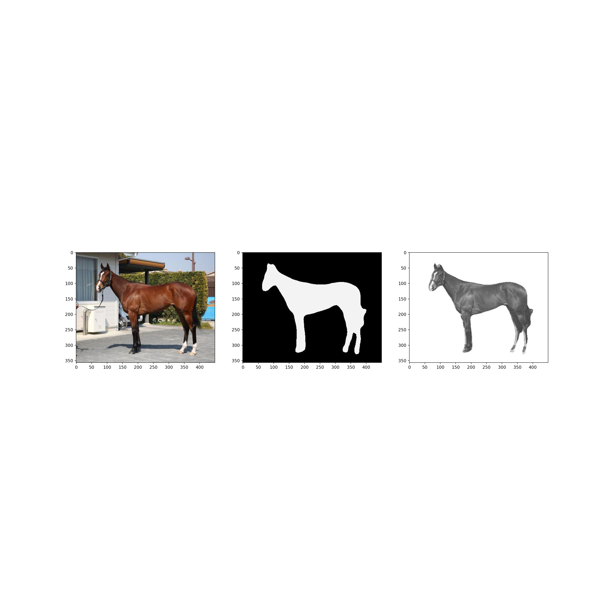

Hi. In the last post, I built a model to predict the order of a racehorse using CNN based on its body image. The results were not so good, and we needed to refine our analysis, especially when we analyzed the factors using shap values, we found that the horses responded more to the stables in the background than to their bodies. This time, I would like to re-analyze the background from the horse’s body photo using Pytorch pre-trained model, and analyze the photo with only the horse’s body.
1. Downloading the pre-trained model
The code is adapted from here. First, install the packages.
import numpy as np
import cv2
import matplotlib.pyplot as plt
import torch
import torchvision
from torchvision import transforms
import glob
from PIL import Image
import PIL
import os
Next, install the pre-trained model.
#Install a pre-trained model
device = torch.device("cuda:0" if torch.cuda.is_available() else "cpu")
model = torchvision.models.segmentation.deeplabv3_resnet101(pretrained=True)
model = model.to(device)
model.eval()
Apparently, all pre-trained models assume a mini-batch of 3-channel RGB images of shape \((N, 3, H, W)\) normalized in the same way. Here, \(N\) is assumed to be the number of images and \(H\) and \(W\) are assumed to be at least 224 pixels. The images need to be scaled to a range of [0, 1] and then normalized using the mean value = [0.485, 0.456, 0.406] and the standard value = [0.229, 0.224, 0.225]. So, we define a function that does the preprocessing.
#preprocessing
preprocess = transforms.Compose([
transforms.ToTensor(),
transforms.Normalize(mean=[0.485, 0.456, 0.406], std=[0.229, 0.224, 0.225]),
])
2. Executing the Background Deletion Process
Now, let’s load the images collected by the selenium code in the previous post and remove the background one by one.
#Specify a folder
folders = os.listdir(r"C:\Users\aashi\umanalytics\photo\image")
#Reads an image from each folder and converts it to a numpy array of RGB values using the Image function
for i, folder in enumerate(folders):
files = glob.glob("C:/Users/aashi/umanalytics/photo/image/" + folder + "/*.jpg")
index = i
for k, file in enumerate(files):
img_array = np.fromfile(file, dtype=np.uint8)
img = cv2.imdecode(img_array, cv2.IMREAD_COLOR)
h,w,_ = img.shape
input_tensor = preprocess(img)
input_batch = input_tensor.unsqueeze(0).to(device)
with torch.no_grad():
output = model(input_batch)['out'][0]
output_predictions = output.argmax(0)
mask_array = output_predictions.byte().cpu().numpy()
Image.fromarray(mask_array*255).save(r'C:\Users\aashi\umanalytics\photo\image\mask.jpg')
mask = cv2.imread(r'C:\Users\aashi\umanalytics\photo\image\mask.jpg')
bg = np.full_like(img,255)
img = cv2.multiply(img.astype(float), mask.astype(float)/255)
bg = cv2.multiply(bg.astype(float), 1.0 - mask.astype(float)/255)
outImage = cv2.add(img, bg)
Image.fromarray(outImage.astype(np.uint8)).convert('L').save(file)
The following mask image is output using the pre-trained model, and the numpy array and the mask image are merged to create a background delete image. The output looks like the following.
plt.gray()
plt.figure(figsize=(20,20))
plt.subplot(1,3,1)
plt.imshow(img)
plt.subplot(1,3,2)
plt.imshow(mask)
plt.subplot(1,3,3)
plt.imshow(outImage)
plt.show()

plt.close()
Here’s what the folders look like. Some of them are handled well and some of them show the trainer. I know there is a way to identify the objects and mask only the horses, but this model doesn’t allow for object labeling, so we’ll continue with that.
3. Analysis using CNN
Here is the same content as in the previous article. I will only post the results.
## Test accuracy: 0.6779661016949152
## <sklearn.metrics._plot.confusion_matrix.ConfusionMatrixDisplay object at 0x0000000030D91888>
The results have been disastrous.
I have not been able to identify it at all. Aren’t there any characteristics in the horse photos that would predict the rankings? Or is it that there is no variation in the photos of the horses in G1 races and it is impossible to identify them? Either way, it seems a bit harsh.
4. Interpretation of results using Shap values
As before, let’s see how it fails using the shap value. We will use this image as an example.
plt.imshow(X_test[4])
plt.show()
plt.close()
import shap
background = X_resampled[np.random.choice(X_resampled.shape[0],100,replace=False)]
e = shap.GradientExplainer(model,background)
shap_values = e.shap_values(X_test[[4]])
shap.image_plot(shap_values[1],X_test[[4]])
They seem to be evaluating from the paws to the face. Surprisingly, they do not seem to be evaluating the buttocks.
I would like to try to visualize which aspect of the image is captured in each layer.
from keras import models
layer_outputs = [layer.output for layer in model.layers[:8]]
layer_names = []
for layer in model.layers[:8]:
layer_names.append(layer.name)
images_per_row = 16
activation_model = models.Model(inputs=model.input, outputs=layer_outputs)
activations = activation_model.predict(X_train[[0]])
for layer_name, layer_activation in zip(layer_names, activations):
n_features = layer_activation.shape[-1]
size = layer_activation.shape[1]
n_cols = n_features // images_per_row
display_grid = np.zeros((size * n_cols, images_per_row * size))
for col in range(n_cols):
for row in range(images_per_row):
channel_image = layer_activation[0,
:, :,
col * images_per_row + row]
channel_image -= channel_image.mean()
channel_image /= channel_image.std()
channel_image *= 64
channel_image += 128
channel_image = np.clip(channel_image, 0, 255).astype('uint8')
display_grid[col * size : (col + 1) * size,
row * size : (row + 1) * size] = channel_image
scale = 1. / size
plt.figure(figsize=(scale * display_grid.shape[1],
scale * display_grid.shape[0]))
plt.title(layer_name)
plt.grid(False)
plt.imshow(display_grid, cmap='viridis')
plt.show()
plt.close()


I still can’t understand this one.
5.Summary
I removed the stable background and rerun it, but the results were the same - it was a good experience using PyTorch and removing the background, but not with any results, so I’ll stop with the horse photos for now.